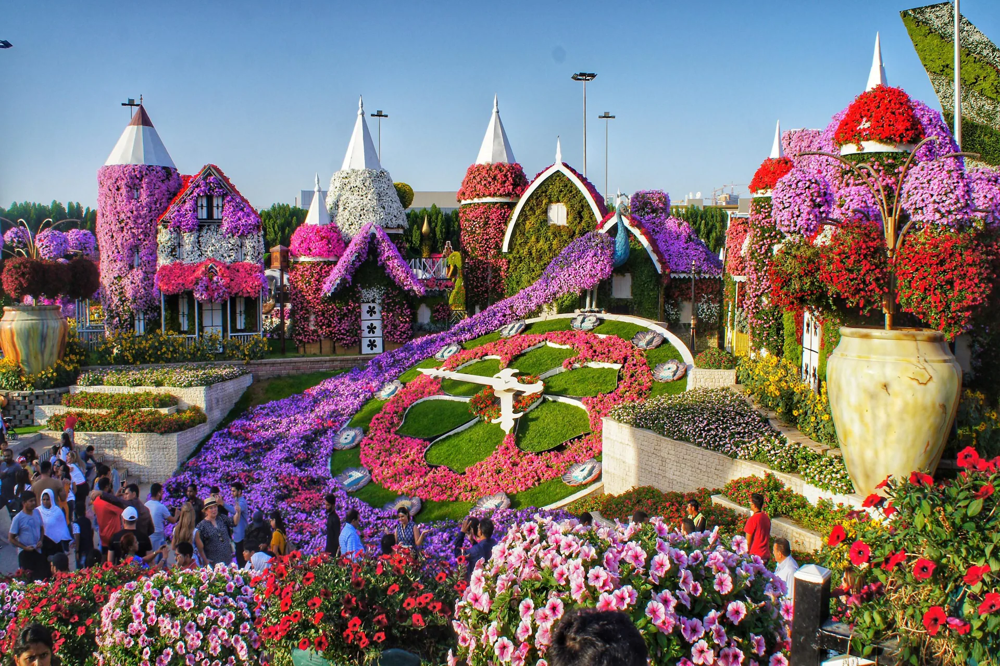
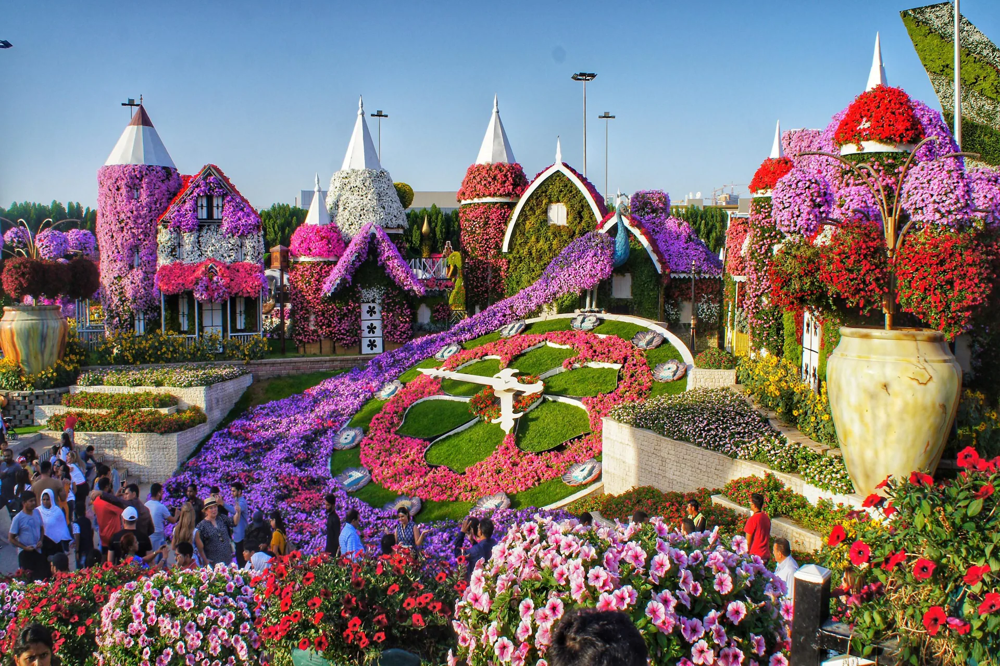
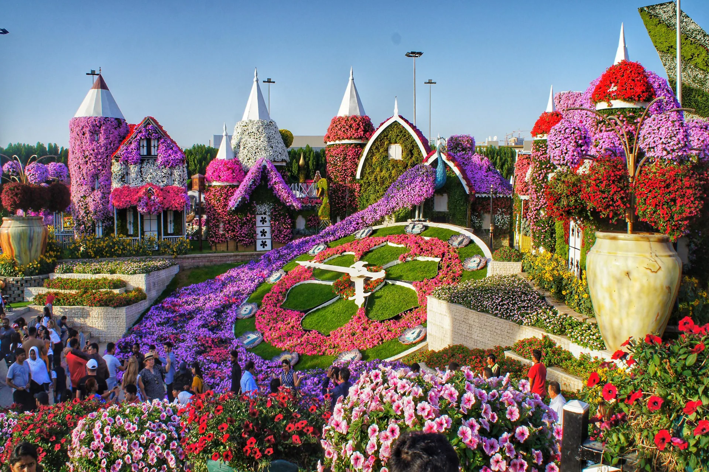

Visite o edifício mais alto do mundo e desfrute das incríveis vistas panorâmicas da cidade a partir do deck de observação. O Burj Khalifa é um arranha-céu icônico localizado em Dubai, nos Emirados Árabes Unidos. Ele é conhecido por ser o edifício mais alto do mundo, com uma altura impressionante de 828 metros (2.722 pés). O Burj Khalifa foi projetado pelo arquiteto Adrian Smith da empresa de arquitetura Skidmore, Owings & Merrill e foi inaugurado em 4 de janeiro de 2010. O edifício não é apenas uma proeza arquitetônica, mas também se tornou um símbolo da modernidade e inovação de Dubai. Além disso, o Burj Khalifa desempenhou um papel importante na transformação da paisagem urbana de Dubai e contribuiu significativamente para o seu status como um destino turístico de renome mundial.
O Aquaventure Waterpark é um popular parque aquático localizado no resort Atlantis The Palm em Dubai. É um destino emocionante para famílias, amigos e viajantes que buscam diversão aquática e aventura. O parque oferece uma variedade de toboáguas e escorregadores emocionantes, desde os mais tranquilos até os mais radicais, como o "Leap of Faith", que leva os visitantes a deslizarem através de um tubo transparente que passa por um aquário de tubarões. O Aquaventure oferece áreas de praia com areia branca, bem como várias piscinas, incluindo uma piscina de ondas. Há áreas dedicadas para crianças com escorregadores menores e atividades aquáticas, tornando o parque adequado para todas as idades.
• O Burj Al Arab é um dos hotéis mais icônicos e luxuosos do mundo, localizado em Dubai, Emirados Árabes Unidos. Conhecido por sua arquitetura distinta em forma de vela e seu serviço de classe mundial, o Burj Al Arab é um verdadeiro marco da cidade. Ele é projetado para se assemelhar a uma vela de dhow, um barco tradicional árabe. Sua estrutura única se destaca no horizonte de Dubai. O hotel fica em uma ilha artificial conectada à costa por uma ponte privativa. é frequentemente descrito como um hotel de sete estrelas, embora não exista oficialmente uma classificação de sete estrelas.

O Dubai Miracle Garden é um dos jardins mais impressionantes e únicos do mundo, localizado em Dubai, Emirados Árabes Unidos. Este jardim exuberante e colorido é famoso por suas exposições de flores e esculturas elaboradas, que atraem visitantes de todas as partes em busca de uma experiência visualmente deslumbrante.
A Palm Jumeirah é uma das atrações mais icônicas de Dubai. Ela é um arquipélago artificial em forma de palmeira localizado na costa de Dubai. Ela é uma criação impressionante da engenharia que se assemelha a uma palmeira quando vista de cima, ela consiste em um tronco, uma coroa com 16 ramos e uma série de crescentes que protegem o conjunto das ondas do mar. A ilha abriga alguns dos hotéis mais luxuosos do mundo, incluindo o icônico Atlantis, The Palm, que possui um aquário espetacular, um parque aquático chamado Aquaventure e uma praia privada.
O Dubai Frame é uma atração arquitetônica distinta localizada em Dubai, Emirados Árabes Unidos. Ele é uma estrutura de aço e vidro com uma forma retangular e é projetado para criar uma "moldura" que captura as vistas panorâmicas da cidade, ele está situado no Zabeel Park, oferecendo uma vista espetacular das duas principais partes de Dubai - a parte antiga (Deira e Bur Dubai) e a parte moderna (Jumeirah e Downtown Dubai). O design do Dubai Frame é o que o torna verdadeiramente especial. Ele possui dois pilares verticais conectados por uma passarela horizontal no topo. A ideia é que, quando você olha através do Dubai Frame, uma parte da cidade moderna é vista de um lado e a parte antiga do outro, simbolizando a conexão entre o passado e o futuro de Dubai.
The Pointe é um destino de entretenimento e lazer localizado na Palm Jumeirah, uma ilha artificial em forma de palmeira. O The Pointe é um calçadão à beira-mar que abriga uma variedade de restaurantes, lojas e entretenimento. Ele oferece vistas espetaculares da Atlantis, The Palm, e é um ótimo local para passeios à noite. Uma das atrações principais de The Pointe é a Fonte The Pointe, que realiza espetáculos de água e luzes ao estilo das famosas Fontes de Dubai.
Um complexo de luxo em Dubai, Emirados Árabes Unidos, que combina elementos tradicionais e modernos da arquitetura árabe. É um destino popular para turistas e moradores locais, oferecendo uma experiência única que incorpora hotéis, restaurantes, lojas e entretenimento. Madinat Jumeirah foi projetado para recriar a atmosfera de uma vila árabe tradicional. Ele possui canais navegáveis, vielas de paralelepípedos, edifícios em estilo arquitetônico clássico e elementos inspirados na cultura local.
Algumas imagens do madinat jumeirah: